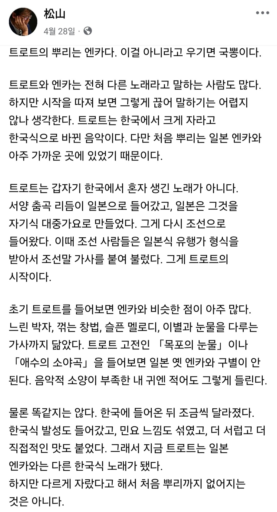
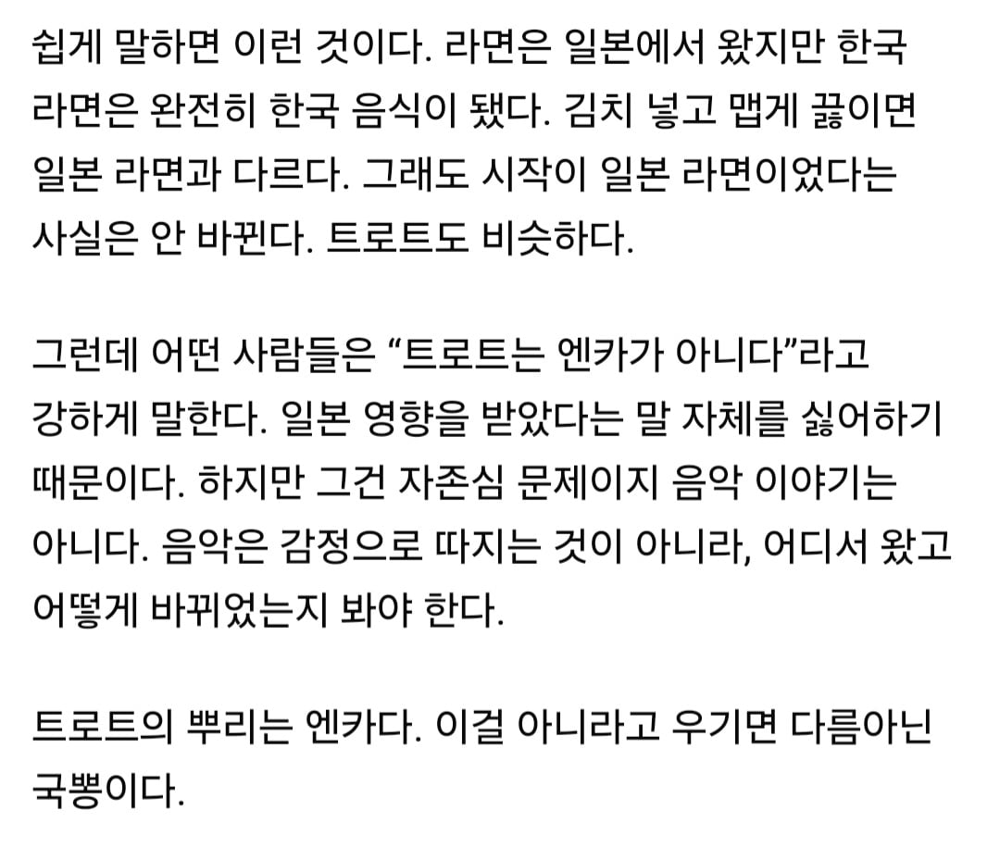

당장 김연자 가수만 해도 일본 가서 엔카의 여왕으로 불리지 않았나
태권도 뿌리가 쇼토칸 가라데인데 이 악물고 수박이랑 택견이 유래하고 하는 거랑 똑같지 뭐
물론 작금에는 태권도랑 쇼토칸 가라데랑 다른 무술이지만
원조격인 일본 도롯도가 우리나라 민요인 아리랑, 타령 등 특유의 꺾어 부르는 창법의 영향을 받음. 그런 일본 트로트를 따라 부른 게 현대의 k트로트다. 예전에는 거의 트로트라는 장으로 부르지 않았고 일부가 굳이 뽕짝으로 구분하기도 했으나 태, 송, 설 등등 유명 가수들이 이제부터 뽕짝이 아니라(뽕짝은 시장에서 각설이가 부르는 음악으로 치부) 수준 높게 영어로 트로트로 불러달라 고 각종 방송에서 대대적으로 홍보하고 다님(그러면서 전통 타령) 지금은 음악 방송에서 듣기 힘들어지고 뭔가 다른 카테고리로 따로 노는 느낌?
뭐야 troat가 아니라 일본어 도롯도였음?
완전 틀린 말은 아닌데 그렇게 따지면 엔카도 우리나라 민요랑 타령에서 강하게 영향 받았고 엔카계에서도 그걸 대놓고 인정하고 있음
그걸 알고 있는 일본 엔카 원로들이랑 한국 트롯 원로들은 서로 리스펙하는거고
원래 문화라는게 서로 영향 받으면서 발전해 나가는거니깐 당연한거임
오... 그건 몰랐음
엔카에 서편제 갬성 섞인게 트롯트가 아닌가 싶음
사족인데 일본에선 이 엔카가수가 존나 존중받아서
이번에 리센느가 트로트 부른 것도 미나미는 내심 긴장했을 것 같더라
고구려 수박도에 안적혀 있는데 구라 ㄴㄴ
근현대 음악에서 뿌리를 찾는거는 큰 의미가 없지
큰 범주를 나누는건 후세의 일이니까..
심지어 트로트의 황제였던 심수봉의 트로트로서는 첫번째이자 인생 스승이 일본의 엔카 레전드였음
그렇게 만들어진 첫곡인 '그때 그 사람'은 결국 夢は夜ひらく라는 곡의 표절곡으로 나왔었고..
스윙임
병신소리 뭐되는거처럼 적어놨는데 그 엔카도 서울민요에 영향을 받았음
엔카레전드들도 서울에서 민요찍먹 해보고온 사람들이 대부분임
일본 엔카 방송 틀어노면 평생 들어보지도 않은 음악에서 정겨움이 느껴짐
영향을 받는다 만다 하지만 아리랑에서도 안느껴지는 트로트 특유의 느낌이 느껴지는건 부정할 수 없지
한 중 일 노래 자체가 서로 영향 많이 받음
중고차팔이 이새끼들 내 이랄줄 알았다
이 콘은 왜 있는건데 ㅋㅋㅋㅋㅋㅋ
한국민요 > 엔카 > 트로트 순으로 영향받고 생겨났지
남진햄이 뿌리는 프랑스라는데
https://youtube.com/shorts/LIaZ-bNByhA?si=6mrgXjZB2AnFeqT-
https://youtu.be/gNCvdoOcPFE?si=yaW4yNsNXXzQefFl 여기선 1910년대 미국과 영국에서 유행했던 리듬인 fox trot의 영향을 받았다고 함
본문과 댓글의견을 조율해서 쓰자면, 한국 트로트의 기원에는 엔카도 많은 비중을 차지한다, 적절한 표현이겠네
트로트의 기원이 민요지 무슨
본인 아버지 피셜 젊은 시절이셨을때 할아버지께서 트로트가수들 보고 저딴게 노래냐면서 쩍빠리들 노래를 왜듣냐고 엄청나게 화내셨다고함
참고로 할아버지가 즐겨듣던 음악들은 한국 민요들이나 30~50년대 미국음악들이었음
서로 좋은점만 배웠단거구만
그런갑다 하면됨
원종단 새끼들 튀어나오는 거 보소 ㅋㅋ
'트로트는 엔카가 아니다'
'트로트의 뿌리는 엔카가 아니다'
이 둘은 같은말임? 이상하네
encar?
아닌데 폭스트롯이 일본에서는 엔카로 그리고 한국에도 알려져서 트로트가된거고 엔카와 트롯은 자매같은거임
서로영향받았고 저런주장하면 무식하다는소리들음
한국은 유독 일본에 대한 열등감으로 추해보일때 많음, 인정할건 하고 발전시켜야지
아닌데 모짜르트인데